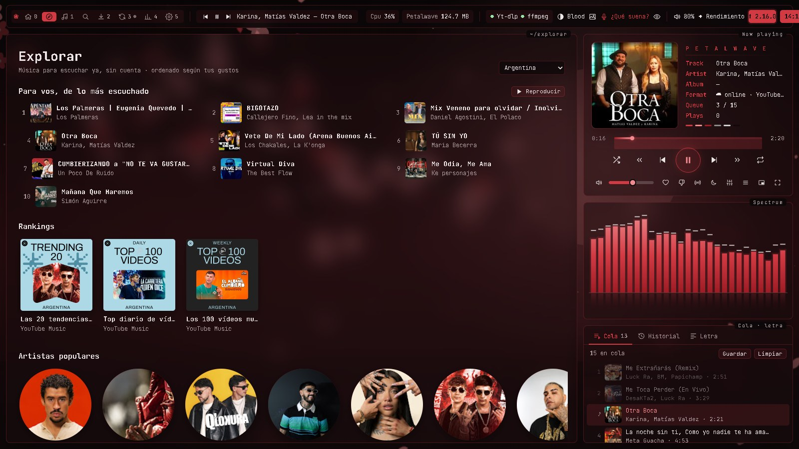
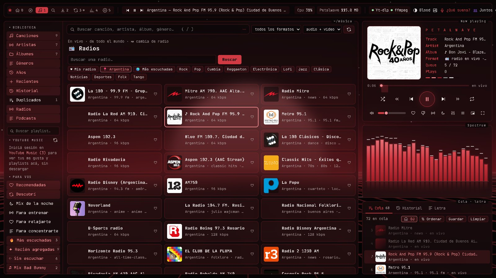
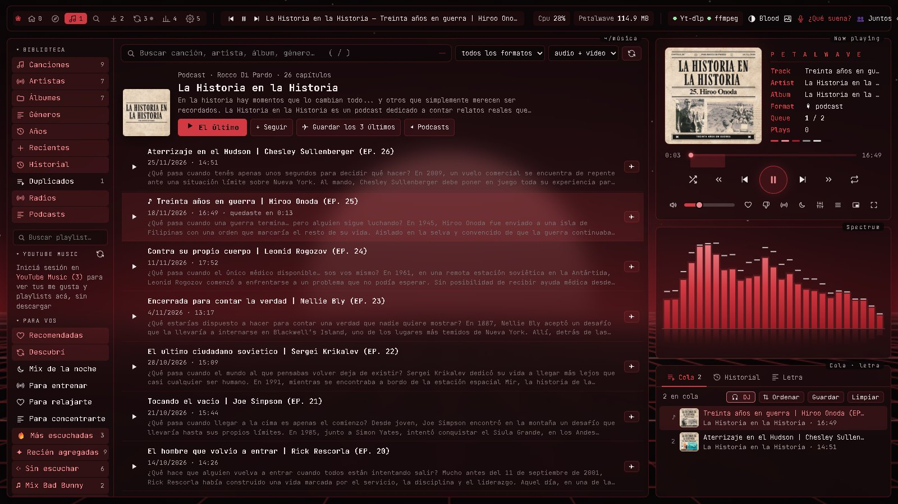
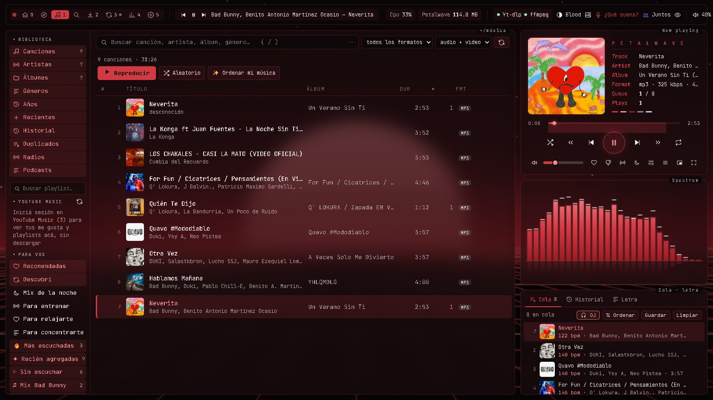
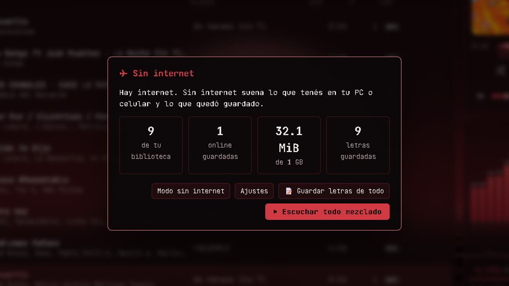
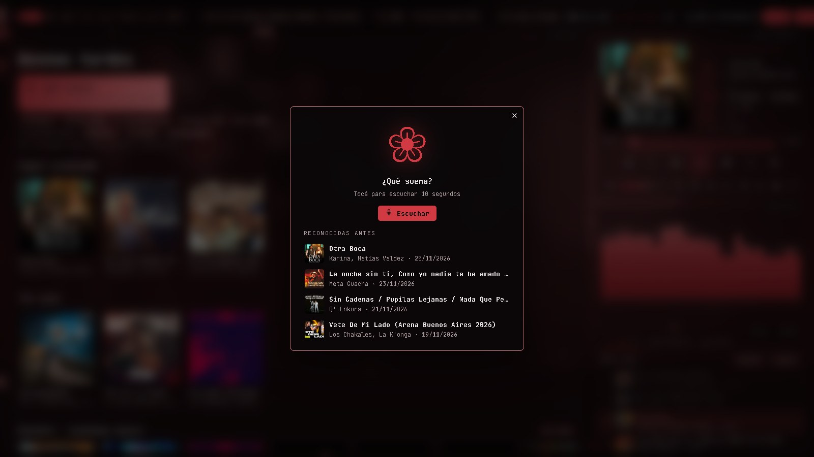
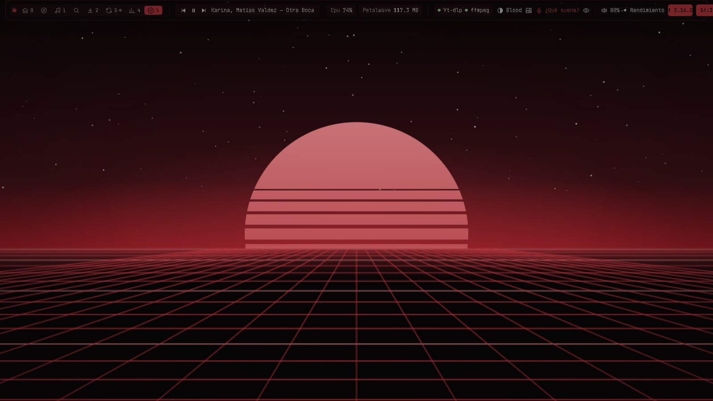

Todo lo que tiene
Funciona aunque no tengas música descargada ni ninguna cuenta.

Música para escuchar ya
Lo más escuchado de tu país, artistas populares y playlists por ánimo y género. Tocás y suena.
- Rankings de cada país
- Ánimos: entrenar, fiesta, relax, concentrarse…
- Ordenado según lo que te gusta

Radios en vivo de todo el mundo
Las radios de tu país, las más escuchadas del mundo y por estilo: rock, cumbia, reggaetón, electrónica, jazz, noticias, deportes… Guardá tus favoritas y cambiá de radio con ⏭.
- Se ve el tema que está pasando
- Con el ecualizador y el visualizador de Petalwave

Tus podcasts, también sin internet
Buscá cualquier podcast o mirá los populares de tu país. Seguí los que te gustan: los capítulos nuevos se guardan solos para escucharlos sin internet (en el celular, con WiFi).
- Recuerda dónde quedaste en cada capítulo
- También por dirección RSS

Mezcla como un DJ
Petalwave mide el tempo y el golpe de cada canción. La siguiente entra justo en un golpe, al mismo ritmo y sin que se pisen los graves. Después vuelve sola a su velocidad, sin cambiar el tono.
- ⇅ ordena la cola por ritmo y energía
- Cruces de 4 a 16 segundos

Sigue sonando sin internet
Lo que escuchás online queda guardado solo, con su letra. Si se corta internet (o en el avión), suena lo que tenés y la cola salta lo que no está guardado.
- Vos elegís cuánto espacio usar
- Modo sin internet para no gastar datos

Recomendaciones que te conocen
Petalwave aprende de lo que escuchás entero, lo que saltás, tus ♥ y tus 👎. Desde el primer día, si le contás qué te gusta.
- Mixes por momento del día y por ánimo
- "Descubrí": canciones nuevas parecidas a tus favoritas
- Cola infinita: la música nunca se corta

Reconocé la canción que suena
Tocás el botón, escucha 10 segundos y te dice qué canción es. Sin clave ni cuenta. La grabación no sale de tu equipo: solo se manda una huella del audio.

Fondos que laten con la música
17 fondos (8 animados) que se pintan con los colores de tu tema. Con los efectos activados, el fondo tiembla y late con cada golpe de la canción. Se apagan con un toque.

Letras sincronizadas y karaoke
Letra al ritmo de la canción, palabra por palabra en modo karaoke, traducción con un toque y visualizador que lee el audio real.